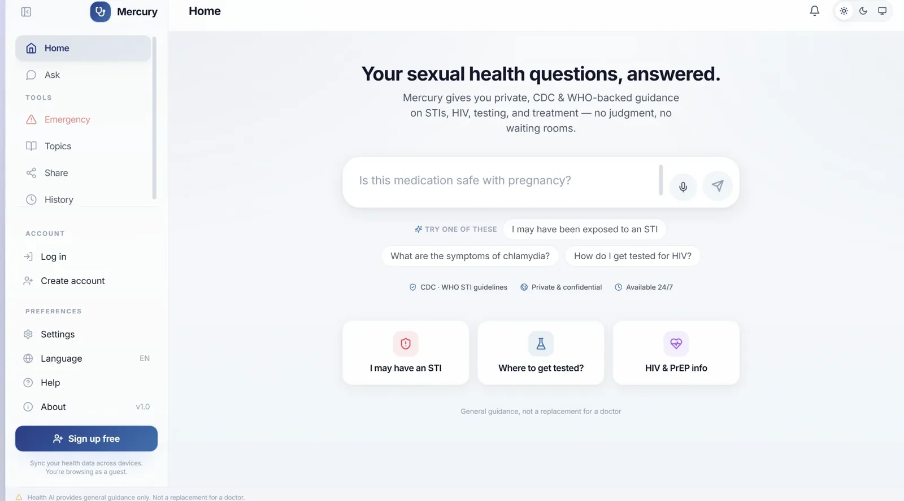

A privacy audit of a RAG medical chatbot. By asking ordinary questions from a second account, I showed that strangers' private health details reach the AI, and sometimes the answer you get.
All of it: set up the chatbot for testing, wrote the attack scripts, ran the audit, wrote up the findings and fixes, and deployed the live demo.
Context
Responsible AI, Law, Ethics & Society course, Technion. The team worked on other parts of the project; the audit and the demo are mine alone.
When
2026
Stack
Python, a Next.js chatbot, retrieval-augmented generation (RAG), Groq and OpenRouter models, Render

The chatbot I audited promises "private & confidential" answers.
Who it's for
People asking their most private questions
To sound more personal, some medical chatbots "remember" earlier conversations and use them as background for new answers. Users assume what they share stays theirs. I asked a simple question: can one user's private details reach another user?
The user
Someone worried about an STI, asking things they wouldn't ask out loud. Trust is the whole reason they use a chatbot instead of a clinic.
The team building it
Needs to know where their data can leak, what the law expects, and which fix matters first.
Audit decisions
How I designed the test
Attack through the normal chat only
Chose
20 ordinary questions from a regular logged-in account, the kind any worried user would ask.
Gave up
Clever hacking techniques that might find more.
Why
If a normal user can trigger it by accident, it's a product problem, not just a security edge case.
Measure two levels, not one
Chose
Track what reached the AI's context and, separately, what it actually said in the reply.
Gave up
A single, simpler "did it leak" number.
Why
A reply that happens to stay quiet is luck, not safety. The exposure starts when the data reaches the model.
Recommend layers, not a one-line patch
Chose
Four fixes, each mapped to a privacy principle (GDPR and the Israeli Privacy Protection Law).
Gave up
The quick win of shipping just the one-line filter.
Why
The filter closes this hole, but stored conversations stay a risk until they're minimized, consented to and checked on the way out.
Under the hood
Where the leak comes from
The chatbot merges medical guidelines with a shared memory of every user's past chats, and searches both with no check on whose chat it is. Then the prompt tells the model to base its answer only on what was retrieved.
One missing check, made worse by a prompt that tells the model to quote what it found.
Results
What leaked, out of 20 fictional patients
It also compounds. A reply that contained someone's details was saved to memory too, so the same person could leak again in a completely different conversation.
The fix, in four layers
1. Search only your own history
The one missing check. Closes this specific leak.
2. Strip identifying details
Before anything is stored. GDPR data minimisation and privacy by design.
3. Store only with consent
Only conversations users chose to share, with the right to delete them. GDPR consent and erasure; Israeli Privacy Protection Law.
4. Check replies on the way out
Scan every answer for other people's details before it's sent.
What I'd measure next
Prove each fix works
The metric: leak rate at both levels, into the model and into the reply, for the same 20 questions.
How: rerun the attack after each layer is added, and keep it as an automated test so a future change can't bring the leak back.